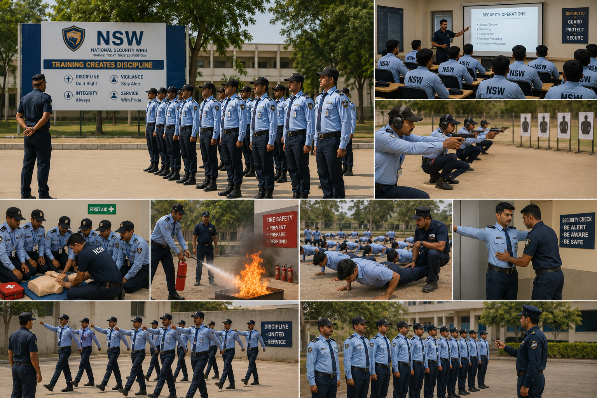

A guard is not hired — a guard is built. Every officer who wears the NSW emblem has earned it through a four-stage system of recruitment, training, deployment, and continuous monitoring.

Most security agencies in India treat training as a checklist — a half-day briefing before deployment, a uniform handover, and a posting order. At NSW, training is a structured ten-day residential programme that every recruit, without exception, must clear before stepping onto a client site.
Our curriculum is aligned with the National Skill Development Corporation's Security Sector Skill Council framework and supplemented with NSW-specific modules built from operational learnings across our 120+ active sites. The programme is taught by serving senior supervisors with field experience, not by office-based trainers reading from manuals.
When you receive an NSW officer at your premises, you are receiving a graduate of a system — not a casual hire in a borrowed uniform.
Every officer at NSW passes through this end-to-end process. Each stage has documented criteria, sign-off authorities, and exclusion thresholds. There is no shortcut from application to posting.
Background check, antecedent verification, medical fitness, and Aadhaar-validated documentation.
Ten-day residential programme covering drill, regulation, communication, and emergency response.
Site-specific induction, escalation matrix briefing, and supervised handover during the first week.
Continuous supervision, refresher drills, performance review, and welfare audits.
Recruitment is the most consequential decision in private security. A weak recruit cannot be trained into a strong officer. Our screening filters are deliberately strict — we would rather under-deploy than under-vet.
Each shortlisted candidate is interviewed by our Training Director and a senior supervisor. Antecedents are verified through both online police records and physical address visits. Only when every check returns clean does a recruit move to the training stage.
Our ten-day residential training programme is the core of the NSW promise. Recruits are housed at our training facility, follow a structured daily schedule, and are evaluated on practical drills and written assessments throughout the programme.
Days 1–2 — Foundation: Introduction to private security in India, the PSARA Act, the rights and limits of a security officer, and the NSW code of conduct. Recruits learn what they may and may not do at a post — and the legal consequences of crossing those lines.
Days 3–4 — Drill and Bearing: Parade-ground drill, salute discipline, posture, alertness drills, and the physical bearing expected of an officer in uniform. Drill is not ceremonial — it is the foundation of the discipline that visitors and intruders will read on sight.
Days 5–6 — Operational Modules: Visitor handling, gate-pass discipline, vehicle inspection, frisking protocols, occurrence book maintenance, and shift handover routines. Recruits learn the paperwork and the postures that define competent security at a gate.
Days 7–8 — Emergency Response: Fire safety, extinguisher operation, evacuation drills, basic first aid, conflict de-escalation, and the chain-of-escalation when an incident exceeds the officer's authority. Hands-on practice with extinguishers and stretcher carry.
Day 9 — Communication and Etiquette: How to address visitors, executives, and emergencies. Clear, calm, respectful language under pressure. Telephone protocol and radio communication discipline.
Day 10 — Evaluation: Written paper, practical drill assessment, and an oral interview by senior staff. Recruits who fail any component repeat the relevant module before sign-off. There is no soft pass at NSW.
The curriculum is aligned with the National Skill Development Corporation's Security Sector Skill Council qualifications — ensuring that NSW-trained officers meet the national framework for the role they perform.
Training concludes the moment the officer reports at your gate — but our work does not. Every officer arrives at a new posting with a structured site-induction programme that ensures they understand your premises before they protect it.
For the first seven days at any new site, the new officer is shadowed by an existing supervisor or senior officer to ensure correct routine adoption. We do not consider a deployment 'live' until the supervisor has signed off on the officer's site competence.
A trained officer left unsupervised will, over time, drift toward casual habits. Continuous supervision is therefore not optional at NSW — it is the only way to preserve the discipline our training builds.
Every officer attends a quarterly half-day refresher covering recent incident learnings, drill correction, and any updated SOPs. Annually, every officer revisits the full training facility for a two-day re-certification.
Salary disbursement, statutory contributions, leave records, and grievance handling are reviewed by our Compliance Officer every month. An officer whose welfare is neglected cannot be trusted with yours.